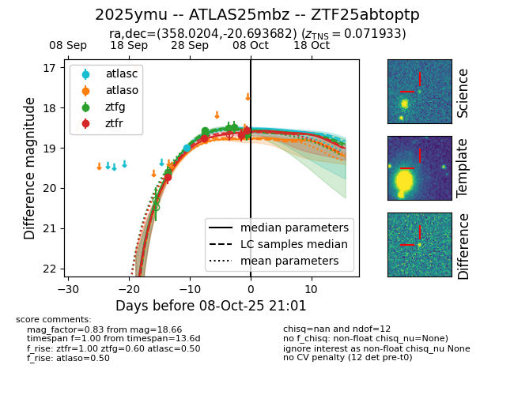
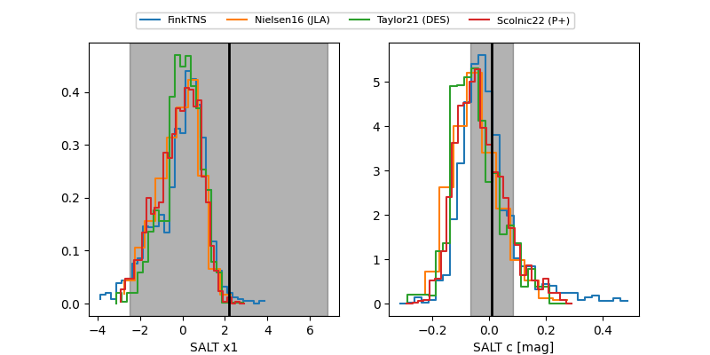

FINK: ZTF25abtoptp
Lasair: ZTF25abtoptp
ALeRCE: ZTF25abtoptp
TNS: 2025ymu
YSE: 2025ymu
ZTF25abtoptp (ztf,fink)
2025ymu (tns,yse)
ATLAS25mbz (atlas)
equatorial (ra, dec) = (358.0204,-20.69368)
galactic (l, b) = (55.1465,-75.00172)


last atlasc=19.01, atlaso=18.79, ztfg=18.66, ztfr=18.57
1 atlasc, 1 atlaso, 6 ztfg, 4 ztfr detections